Which notes is a chord made up of?
Why do notes fit together a certain way?
What is the difference between a major and a minor chord?
Why does one chord sound happy and the other melancholy?
Sound is the movement of pressure changes in a material like air, water or metal.
Air is made up of molecules of oxygen and nitrogen that fly around and bump into any surfaces they encounter.
Pressure is how hard these molecules press against a surface.
We feel the pressure of the air around us on our bodies. It feels normal but if we go to higher altitude, we can feel the pressure decrease in our ears.
When air is "squeezed" into a smaller volume, the pressure gets higher.
When air molecules are pushed closer together, it is called compression.
When they are spread apart, it is called rarefaction.
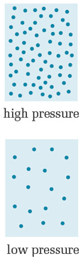
Repetitive back and forth movement.
Can be a pendulum, a tuning fork, a spring, a guitar string, a piano string etc.
Each vibration is also known as a cycle or an oscillation.
When an object vibrates, it causes similar vibrations in the pressure of the surrounding air. These vibrations travel away from the object and can be detected by the human ear and processed by the brain as sound.
This is called a sound wave.
Sound waves can travel through a gas (air), a liquid (water) or a solid (metal or rock).
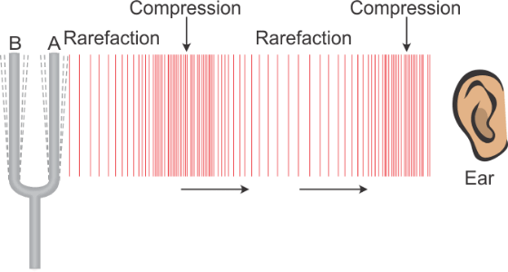
How fast a sound wave moves is called the velocity (meters per second).
The distance between the high pressure areas of a sound wave is called the wavelength (meters).
The number of high pressure areas detected by the ear per second is called the frequency (cycles per seconds or Hertz). It is the rate of the vibration that produced the sound wave.
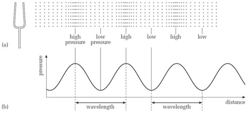
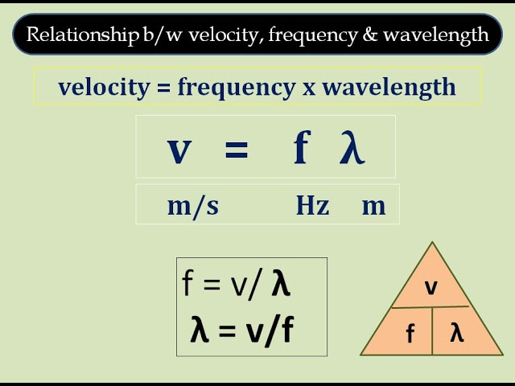
The velocity is a function of the material the wave is travelling through and is roughly constant. It is determined by things like the ambient air temperature and pressure, the tension on a string or the density of a rock.
The longer the wavelength, the lower the frequency.
The shorter the wavelength, the higher the frequency.
Frequency is the measure of how many sound waves occur per second, while pitch is the human perception of how high or low that sound is.
The higher the frequency, the higher the pitch.
The keys on the low end (left hand side) of a piano have lower pitch than the keys on the high end (right hand side).
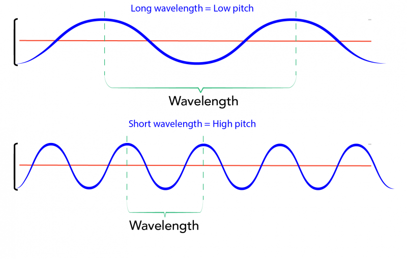
A note in music is a distinct sound at a particular frequency.
The frequency from a musical instrument is controlled by controlling the wavelength.
When a guitar string is pressed against a particular fret, the length of string that can vibrate is being set.
That length determines the wavelength of the soundwave coming from the guitar.
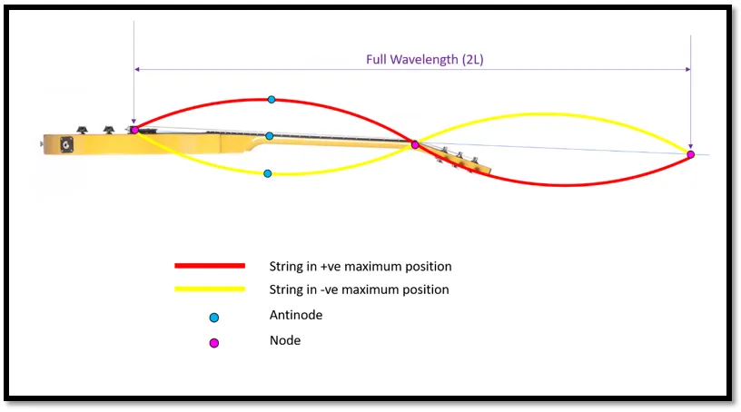
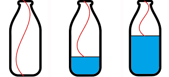
The 4th A note from the left hand side of a standard 88-key piano, or A4 has a frequency of 440 Hz.
The piano string that is struck when A4 key is pressed vibrates 440 times per second.
The C note directly below A4 is called Middle C (C4) on the piano keyboard has a frequency of 261.6 Hz.
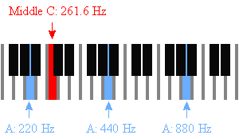
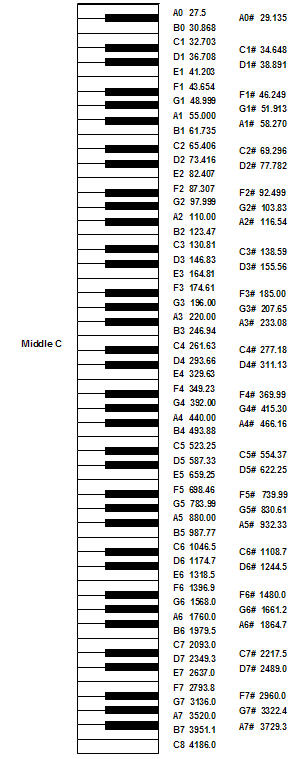
When one musical note has twice the frequency as another note, it is called an octave of the first note.
A4 on the piano keyboard has a frequency of 440 Hz. The next A note above it, A5, has a frequency of 880 Hz.
The next A note below A4 (A3) has a frequency of 220 Hz.
A5 is the octave of A4 (2 x 440 Hz = 880 Hz).
A4 is the octave of A3 (2 x 220 Hz = 440 Hz).
The octave is not the only multiple of a musical frequency.
There are many multiples of a musical frequency.
The octave, or twice the frequency, is the 2nd harmonic.
3 times the frequency is the 3rd harmonic.
4 times the frequency is the 4th harmonic, etc.
A musical scale is series of notes between one note and its octave.
In Western music, the highest number of distinct notes in an octave is 12.
These 12 notes are known as the chromatic scale.
There are other types of scales with a smaller number of notes.
Pentatonic: 5 notes per octave
Heptatonic: 7 notes per octave.
Diatonic: The most common heptatonic scale. The major scale (or Do-Re-Mi) is a diatonic scale.
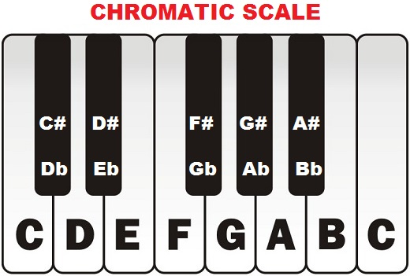
A musical interval is the difference in pitch between 2 notes.
The interval between 2 adjacent notes in the chromatic scale is called a half step or semitone.
The interval between 2 adjacent half steps is called a whole step or whole tone.
The major scale (or Do-Re-Mi) follows a specific pattern of whole steps and half steps.
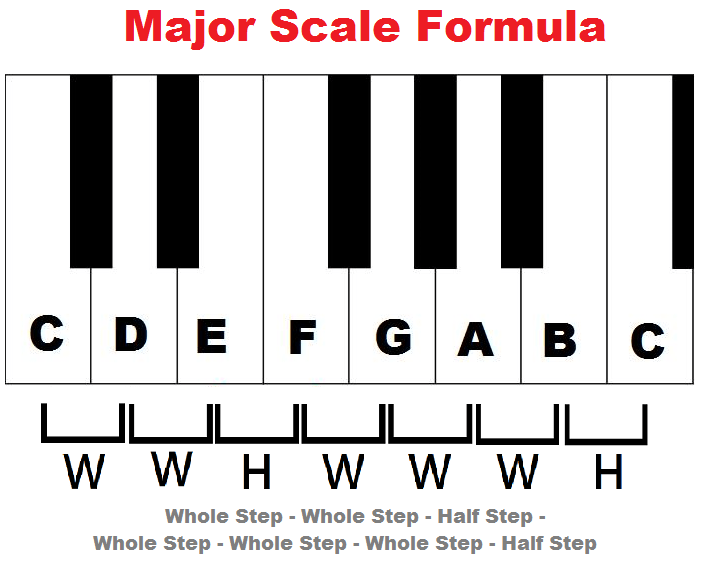
Each step in the major scale has a numeric designation.
The first note of the scale is called the root, a unison or the first.
Each subsequent note of the scale following the root is called the 2nd, 3rd, etc. up to the 7th before ending on the octave.
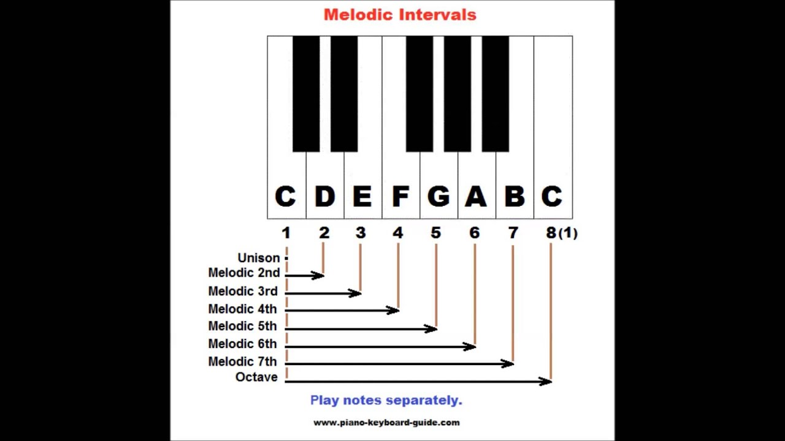
Each step in the chromatic scale has a numeric and descriptive designation.
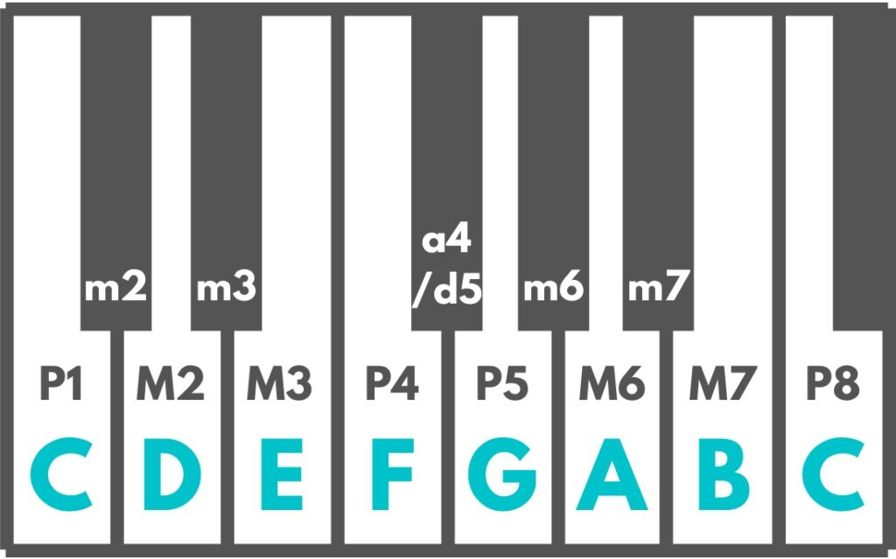
A chord is two or more notes sounded simultaneously.
The most basic type of chord is a triad (3 notes) which consists of the root, the 3rd and the 5th.
A major chord consists of the root, the major 3rd and the perfect 5th.
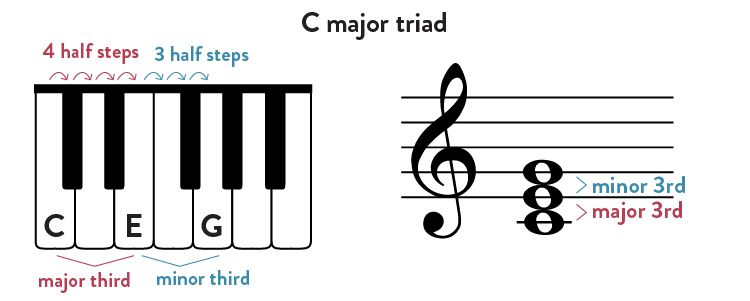
A minor chord consists of the root, the minor 3rd and the perfect 5th.
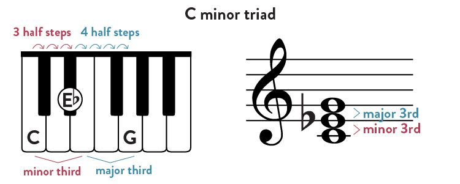